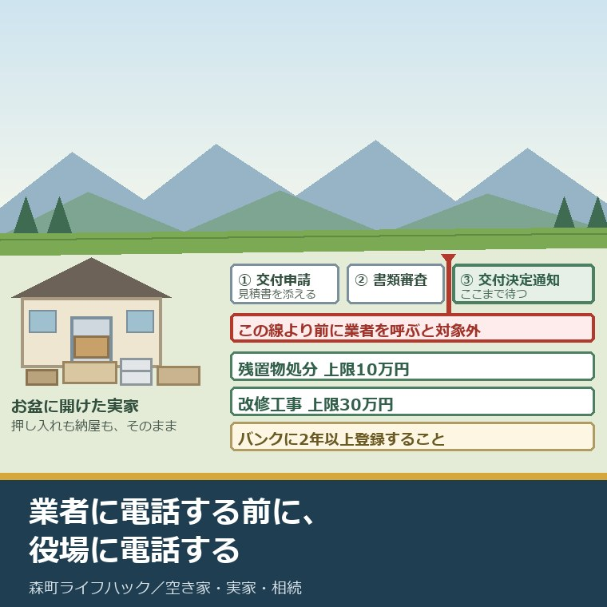
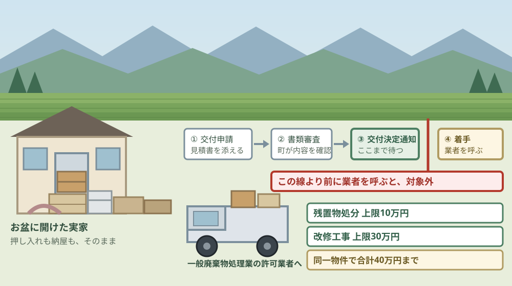
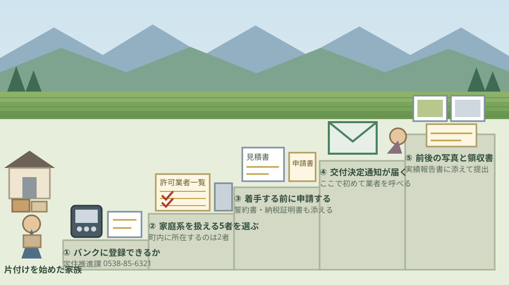

森町の空き家補助金10万円｜残置物処分と2年登録の条件

この記事の要点
Q. お盆に実家を片付け始めました。九月に業者へ頼む予定ですが、森町の補助金は使えますか。
A. 使えますが、順番を間違えると消えます。森町の交付要綱は「事業の着手は、補助金の交付決定通知後」と定めています。業者へ発注する前に、定住推進課（0538-85-6321）へ申請してください。残置物処分の上限は10万円、条件は空き家バンクへの2年以上の登録です。
静岡県周智郡森町（遠州森町）の実家を、お盆に久しぶりに開けた。押し入れも納屋も、そのままだった。この記事は、そこから片付けを始めたご家族に向けて書いています。
親の家の残置物は、たいてい一日では終わりません。自分たちで運べる分を運び、残りは業者に頼む。その判断を九月にする方が、毎年います。
森町には、その費用を補う仕組みがあります。空き家等利活用推進支援事業費補助金。残置物処分は上限10万円、改修工事は上限30万円です。
ただし、この補助金には順番があります。交付要綱の第8条は、事業の着手は補助金の交付決定通知後としなければならないと定めています。先に業者を呼ぶと、対象から外れます。
今日は2026年8月25日。条件を順に並べ、誰に頼めるのかまで数え、最後に今日できることを書きます。
公式情報から確定できること
2026年8月25日時点で、森町公式と森町の交付要綱から確認できたことを並べます。この補助金の正式名称は、森町空き家等利活用推進支援事業費補助金です。出典は記事の末尾に載せています。
一つ目。補助の額は上限であって、定額ではありません。森町空き家等利活用推進支援事業費補助金交付要綱の第6条は、残置物処分について「残置物処分に要した金額又は10万円のいずれか少ない額」と定めています。実費が7万円なら、7万円です。
二つ目。改修工事は上限30万円です。同じ第6条は、改修工事について「改修工事に要した金額又は30万円のうちいずれか少ない額」と定めています。
三つ目。同じ物件で両方を使っても40万円が上限です。同じ条の第2項は、同一の空き物件に係る補助金の額は前項各号に掲げる額を合計した額を超えることができないと定めています。
四つ目。着手は交付決定通知のあとです。同じ要綱の第8条は、交付の決定をする際の条件として「事業の着手は、補助金の交付決定通知後としなければならないこと」を挙げています。
五つ目。申請には見積書が要ります。同じ要綱の第7条によれば、交付申請書（様式第1号）に、誓約書兼同意書、補助対象経費の根拠が確認できる見積書の写し等、市町村民税等の滞納がないことが分かる納税証明書等を添えて提出します。
六つ目。空き家バンクに2年以上登録する意思が要件です。同じ要綱の第3条は、所有者等について「バンクを通じて売却又は賃貸をするまでの間、継続して２年以上バンクに登録する意思を有すること」と定めています。
七つ目。身内には売れません。同じ第3条は、バンクに登録した空き物件を3親等以内の親族に売却または賃貸をしないことも要件としています。
八つ目。買った人・借りた人も対象になります。同じ第3条によれば、購入者は空き物件の引渡し以後3年以上利活用する意思を有すること、賃借人は同じ3年に加えて所有者等から工事や処分を行う承諾を得ていることが要件です。
九つ目。登録できる物件かどうかが先に判定されます。同じ要綱の第4条は、補助の対象となる空き物件を「調査の結果、バンクに登録可能と判断されたもので、建築基準法その他の法令に違反しないもの」と定めています。
十番目。残置物処分の対象経費は6種類です。同じ要綱の第5条によれば、ごみ処理手数料、ごみの収集及び運搬手数料、家電リサイクル法の特定家庭用機器の引取りに要する経費、家財処分の委託等に係る経費、ハウスクリーニング等の建物内の清掃に要する経費、建物敷地内での支障木の伐採・雑草の除草・支障物の撤去に要する経費です。
十一番目。ごみ処理手数料は許可業者への委託に限られます。同じ第5条は、ごみ処理手数料について「廃棄物の処理及び清掃に関する法律第７条に規定する一般廃棄物処理業の許可を受けている業者に委託するものに限る」と括弧書きで定めています。
十二番目。対象にならない経費が4つ明記されています。同じ第5条第2項によれば、公共下水道の接続に要する経費、浄化槽の設置に要する経費、外構工事に要する経費、家具・家庭用電化製品等の購入に要する経費は対象外です。
十三番目。写真が2枚要ります。同じ要綱の第12条によれば、事業が完了したときは実績報告書（様式第5号）に領収書の写しと、着手前および完了後の写真を添えて報告します。
十四番目。書類は5年間保管します。同じ要綱の第8条によれば、補助金の収支に関する帳簿と領収書等の関係書類を、補助金の交付を受けた年度終了後5年間保管しなければなりません。
十五番目。予算の範囲内です。森町公式のページは「予算の範囲内での補助とさせていただきます」と記しています。要綱の第1条も、予算の範囲において交付するものと定めています。
十六番目。要綱は令和4年に作り直されたものです。同じ要綱は令和4年3月31日告示第62号として定められ、令和5年6月2日告示第90号で改正されています。令和4年4月1日から施行し、令和4年度分の補助金から適用されています。
十七番目。前身は家財道具の処分費用に限った補助でした。同じ要綱の附則は、施行前に改正前の「森町空き家家財道具等処分費用補助金交付要綱」の規定により取り扱ったものは、改正後の規定により取り扱ったものとみなすと記しています。
十八番目。補助の対象は一戸建ての空き家です。森町公式の空き家・空き地バンクのページは、「森町空き家・空き地バンク」に登録可能な一戸建ての空き家の家財道具等の処分に要する費用の一部に対し、予算の範囲内で補助金を交付していると記しています。
十九番目。いま公開されている空き家は11件です。森町公式の空き家・空き地バンク物件公開ページ（2026年8月17日更新）によれば、公開中の空き家は11件、空き地は12件。空き家の売却価格は100万円から1,300万円、賃貸は月3万円から4万5,000円です。
二十番目。優先交渉権は先着順です。同じページは「優先交渉権は先着順とします。優先交渉権を得た方の結果が分かるまでは次の方は交渉できません」と記しています。
二十一番目。町は仲介も管理もしません。森町公式の空き家・空き地バンクのページ（2026年7月28日更新）は、町は情報提供のみを行い、物件の仲介、契約等については一切行わないこと、物件の管理も行わないことを明記しています。登録自体は無料です。
二十二番目。許可業者の一覧は町が公開しています。森町公式の一般廃棄物収集運搬許可業者一覧（2024年12月24日更新）には、廃棄物の処理及び清掃に関する法律第7条の規定に基づき町の許可を受けた事業者が20者掲載されています。別枠で再生利用個別指定事業者が1者あります。
二十三番目。そのうち家庭系を扱えるのは5者です。同じ一覧で取扱廃棄物が「事業系及び家庭系」となっているのは、有限会社大橋商事（磐田市池田）、株式会社シーズ（森町一宮）、クリアーベスト オカモト（袋井市旭町）、株式会社吉田商店（森町森）、ヤマヒロ産業（袋井市春岡）の5者です。
二十四番目。森町内に事業所があるのは2者です。同じ5者のうち、住所が森町内にあるのは株式会社シーズ（森町一宮998-2・0538-67-8088）と株式会社吉田商店（森町森1322・0538-85-5561）です。
二十五番目。無許可の回収は違法です。森町公式は、家庭廃棄物を回収するには一般廃棄物収集運搬業許可が必要であり、産業廃棄物や古物商の許可があってもこの許可がなければ不用品回収はできないと案内しています。
二十六番目。自分で運ぶ道もあります。森町公式によれば、中遠クリーンセンターへの可燃ごみの搬入手数料は、令和4年4月1日改定で10キログラム未満80円、10キログラム以上は10キログラムにつき163円です。
二十七番目。家電4品目は町では収集しません。森町公式によれば、テレビ、エアコン、冷蔵庫・冷凍庫、洗濯機・衣類乾燥機は家電リサイクル法の対象で、購入店や家電リサイクル協力店への依頼、指定引取場所への持ち込み、許可業者への依頼のいずれかになります。

この絵で描きたかったのは、片付けの気持ちと、補助金の手続きが、逆向きに進むという点です。お盆に家を開けた勢いのまま業者を呼びたくなる。けれど制度の側は、見積りを取り、申請し、決定を待ってから動くことを求めています。
森町の家に置き換えると、何が起きるか
ここからは、公表された数字を割り戻します。私の計算であることを先に断っておきます。
まず、自分で運んだ場合です。中遠クリーンセンターの手数料は10キログラムにつき163円ですから、1トンで16,300円になります。軽トラック1台の積載量が350キログラムなら、1回あたり約5,700円です。
実家1軒分の家財が2トンだとすると、持ち込み手数料は約32,600円。ただし、これは運ぶ手間を数えていない金額です。軽トラックで6往復する時間と、階段から下ろす体力は含まれていません。
次に、業者に頼んだ場合です。私の商売の感覚では、一戸建て1軒分の家財を業者へ丸ごと委託すると、数十万円の桁になることが多い。これは森町の公表資料にある数字ではなく、私が実務で見てきた相場感です。
そう置くと、10万円という上限の意味が変わります。全額をまかなう額ではありません。ただ、軽トラック十数往復ぶんの手間を買い戻す額ではあります。
もう一つ、天秤にかけるべきものがあります。2年間、空き家バンクに登録し続けるという条件です。その間、3親等以内の親族には売れません。
実家を空けたまま2年持つと、費用が出ていきます。固定資産税、火災保険、年2回の草刈り。森町で扱う空き家の年間維持費は、この三つを足して数万円という水準です。
つまり、10万円の補助と引き換えに、2年ぶんの維持費を負う可能性がある。この二つを並べてから決めるのが、私の勧める順番です。
水道は、家を空けた時点で問題になります。森町には休止の制度がなく、いったん止めると再開に加入金がかかります。額は誰も住まない実家の水道について書いた記事に整理しました。
バンクそのものの性格も、先に知っておいてください。登録すれば町が売ってくれる制度ではありません。その仕組みは森町の空き家バンクについて書いた記事にまとめています。
自分で運ぶ分の段取りは、受入日から逆算します。中遠クリーンセンターは日曜日と祝日が休みです。持ち込みの手順は中遠クリーンセンターの受入日について書いた記事にあります。
実家そのものの位置づけも、確かめておく価値があります。町は10年の計画で空き家を見ています。その中身は第2期空家等対策計画から実家の位置を確かめた記事に書きました。
売る側の税金の話は、別の記事にしています。数百万円の土地には、100万円控除という別の制度があります。詳しくは低未利用土地の100万円控除について書いた記事をご覧ください。
良い点：この補助金の、よくできているところ
まず、森町空き家等利活用推進支援事業費補助金のよくできているところを数えます。注文の前に置くのが、私の書き方の順番です。
一つ目。片付けの費用を正面から対象にしています。改修工事だけを補助する自治体は多くありますが、残置物処分に独立した枠を置き、要綱の条文で6種類の経費を並べているのは具体的です。
二つ目。除草と支障木の伐採まで入っています。建物の中だけでなく、敷地内の支障木の伐採、雑草の除草、支障物の撤去が対象経費に明記されている。実家を空けたご家族が最初につまずくのは、たいてい庭です。
三つ目。許可業者への委託を条件にしています。無許可の回収業者による高額請求や不法投棄は、全国で起きています。町が「一般廃棄物処理業の許可を受けている業者」と条文で縛ったことは、所有者を守る側に働きます。
四つ目。許可業者の一覧を町が公開しています。条件として許可業者を求めるだけでなく、20者の名前、住所、電話番号、取扱廃棄物までPDFで出している。条件と手段が同じ場所でつながっています。
五つ目。所有者だけでなく、買った人・借りた人も申請できます。要綱の第3条は、購入者と賃借人を補助対象者に含めています。空き家を買ってから片付ける形も想定されている。空き家の出口を、売る側からも買う側からも開けています。
注文したい点：九月に片付けを頼む側から見て足りないところ
その上で、一事業者として注文したい点を並べます。定住推進課移住交流係が、移住相談も空き家バンクも低未利用土地の確認書も同じ係で回していることは承知の上です。
一つ目。「着手は交付決定通知後」が、町のページに書かれていません。この一行は要綱の第8条にあり、PDFを開かないと読めません。補助金のページ本文には、補助対象者、対象経費、補助要件、補助金額は並んでいますが、着手の時期がない。
二つ目。2年の登録義務が「補助要件」の表現から読み取りにくい。ページには「空き家バンクに2年以上継続して物件を登録すること」とあります。要綱の条文は「売却又は賃貸をするまでの間、継続して２年以上」です。半年で売れた場合にどうなるのかが、どちらの文からも決められません。
三つ目。申請から交付決定までの日数が示されていません。要綱の第9条は「速やかに」としか書いていない。九月に頼みたい家族は、いつ申請すれば九月に着手できるのかを逆算できません。
四つ目。受付期間と予算の残りが分かりません。予算の範囲内という条件がある以上、年度のどの時点で埋まるのかが所有者の判断を左右します。一事業者としては、年度当初に予算枠と申請件数の目安を出してほしいと思います。
五つ目。家庭系を扱える業者が5者しかいないことに、案内が触れていません。許可業者一覧の20者を見て電話をかけると、「事業系のみです」と断られる可能性があります。取扱廃棄物の欄まで見る必要があることを、補助金のページ側にも一行添えてほしい。

対案・結論：今日、家族が確かめられること
結論を急がないと決めたうえで、今日から動ける順番を書きます。順番はイラストのとおりです。
| 順番 | 確かめること | 確認先 |
|---|---|---|
| 1 | その家が空き家バンクに登録できるか。2年の登録に応じられるか | 森町 定住推進課移住交流係 0538-85-6321 |
| 2 | 申請から交付決定通知までに何日かかるか。予算はまだ残っているか | 同じ窓口。九月に着手したいと日付で伝える |
| 3 | 頼める業者はどこか。取扱廃棄物が「事業系及び家庭系」か | 森町一般廃棄物収集運搬許可業者一覧（住民生活課 0538-85-6314） |
| 4 | 見積書をもらう。家電4品目とそれ以外を分けてもらう | 選んだ許可業者。家電はリサイクル料金が別 |
| 5 | 自分で運ぶ分と、頼む分の線引き | 中遠クリーンセンター（10キログラムにつき163円） |
| 6 | 着手前の写真を撮る。交付決定通知が届くまで動かさない | 手元のスマートフォン。部屋ごとに1枚ずつ |
1は、今日できます。電話で聞くのは2つだけです。この家はバンクに登録できるか、2年の登録が条件で間違いないか。ここが通らなければ、補助金の話は先へ進みません。
2も、同じ電話で聞けます。「九月中に業者へ頼みたい」と日付で伝えてください。間に合わないなら、業者の予定を先に押さえるより、申請日を決めるほうが先です。
3は、一覧を1枚見れば分かります。取扱廃棄物の欄が「事業系及び家庭系」になっている5者を書き写してください。「事業系一般廃棄物」だけの業者に電話しても、家庭の残置物は運べません。
4は、見積りの取り方です。家電リサイクル法の4品目は、リサイクル料金が別にかかります。見積書を分けてもらうと、補助の対象経費と対象外が後で仕分けやすくなります。
5は、線引きの話です。衣類や紙類のように軽くてかさばるものは、自分で運んだほうが安く済みます。逆に、たんすや仏具のように重くて判断が要るものは、頼んだほうが早い。
6が、いちばん忘れられます。着手前の写真は、実績報告に必要です。片付け始めてから「撮っていなかった」と気づくご家族が出ます。部屋ごとに1枚ずつ、今日撮っておいてください。
家族に残す記録
ここからは、確認した内容を紙1枚に残すための項目です。相続人が複数いる場合、同じことを何度も聞き直さないためのものです。
書き留めるのは、バンクに登録できるかの回答、2年の登録に同意するかの家族の結論、申請から交付決定までの日数、頼む業者名と許可番号、見積額、着手予定日、確認した日付です。この7つで、九月に間に合うかが決まります。
あわせて、実家の名義と地番、固定資産税の年額、火災保険の満期日、水道の名義と口径、家電4品目の有無と台数、仏壇と位牌の扱い、農地や山林の有無を並べておきます。残置物の処分は片付けの話ですが、その先は必ず名義と境界の話になります。
実家の名義、境界、農地、道路まで含めて順に整理したい方は、ふじがおか実家カルテの森町相談窓口もご利用ください。住所が分かれば、建物と敷地のどちらについても、確認する順番を整理できます。
大石の視点
ここからは、私（大石浩之）の個人の考えです。公的な事実とは分けてお読みください。私自身が森町でこの補助金の交付申請に立ち会った経験があるわけではありません。以下は、要綱と公表資料を段取りと家計の目で読んだ私の見方です。
いちばん引っかかったのは、第8条の一行でした。「事業の着手は、補助金の交付決定通知後としなければならないこと」。補助金の世界では当たり前の条文ですが、実家の片付けとは相性が悪い。
お盆に家を開けた家族は、その週のうちに動きたい。次に集まれるのが正月だと分かっているから、勢いのあるうちに終わらせたいのです。そこへ「まず見積りを取り、申請し、決定を待ってください」と言われる。
だから、はっきり書いておきます。業者に電話する前に、役場に電話してください。順番を逆にすると、10万円は消えます。
次に引っかかったのが、業者の数です。一覧に載る20者のうち、家庭系を扱えるのは5者。森町内に事業所があるのは2者だけです。これは制度の欠陥ではなく、この規模の町の現実だと私は見ています。
2者しかいないということは、九月に依頼が重なれば順番待ちになるということです。予算の残りより先に、業者の空きのほうが詰まる可能性があります。そこは、申請の前に電話で確かめておく価値があります。
正直に書くと、2年の登録義務については、私はまだ判断がついていません。10万円のために2年縛られるのが得かどうかは、家によると思っています。
買い手がすぐ付きそうな家なら、2年は長すぎる制約ではありません。逆に、山際で買い手が読めない家なら、2年はそのまま2年ぶんの維持費です。固定資産税と火災保険と草刈りは、登録していても出ていきます。
それでも、この条件には理屈があるとも思います。町が10万円を出す理由は、片付けを手伝うことではなく、その家が流通に乗ることだからです。片付けて終わり、また閉めて終わりでは、町の側に返るものがない。
ここで、私が森町を見ていて気になっている点を一つ書きます。公開中の空き家は11件です。町内に空き家がその数しかないわけではありません。
登録されていない家のほうが、圧倒的に多い。その差の一部は、片付けが終わっていないからだと私は考えています。片付いていない家は、写真も撮れず、内覧もできず、登録の入口に立てません。
だとすれば、残置物処分に10万円を出すというこの仕組みは、順番として正しい。入口の手前にある詰まりを取りに行っているからです。問題は、その仕組みの存在が、片付けを始めた家族に届いていないことです。
一事業者としての注文は、一つだけです。「着手は交付決定通知後」の一行を、補助金のページ本文に入れてほしい。PDFの中ではなく、電話をかける前に読める場所に。
行政に文句を言う前に、自分の商売で同じことができるか考える。私も、費用の話を後回しにして現地へ走ることがあります。順番を守るのは、誰にとっても難しい。
最後に、判断そのものについて。今日、業者を決める必要はありません。ただ、部屋ごとの写真と、家庭系を扱える5者の名前だけは、今日のうちに手元に置いてください。
この2つがあれば、九月に動くにしても、正月まで待つにしても、やり直しになりません。結論が保留のままでも、確認済みの事実が二つ増えたなら、それは前進です。
まとめ
- 森町空き家等利活用推進支援事業費補助金は、残置物処分が上限10万円、改修工事が上限30万円で、同一物件では合計40万円が上限（2026年8月25日確認）
- 交付要綱第6条は「残置物処分に要した金額又は10万円のいずれか少ない額」と定めており、定額ではなく実費と上限のいずれか少ない額
- 交付要綱第8条は、交付の条件として「事業の着手は、補助金の交付決定通知後としなければならないこと」を挙げている
- 交付要綱第3条は、所有者等について「バンクを通じて売却又は賃貸をするまでの間、継続して２年以上バンクに登録する意思を有すること」と定めている
- 同じ第3条は、バンクに登録した空き物件を3親等以内の親族に売却または賃貸をしないことも要件としている
- 購入者は引渡し以後3年以上、賃借人も3年以上の利活用の意思が要件で、賃借人は所有者等の承諾も必要
- 残置物処分の対象経費は、ごみ処理手数料、ごみの収集及び運搬手数料、家電リサイクル法の特定家庭用機器の引取り、家財処分の委託等、建物内の清掃、敷地内の支障木伐採・除草・支障物撤去の6種類
- ごみ処理手数料は「一般廃棄物処理業の許可を受けている業者に委託するものに限る」と括弧書きで限定されている
- 公共下水道の接続、浄化槽の設置、外構工事、家具・家庭用電化製品等の購入は対象外
- 申請書類は交付申請書（様式第1号）、誓約書兼同意書、見積書の写し等、納税証明書等。実績報告には領収書の写しと着手前・完了後の写真が必要
- 帳簿と領収書等は補助金の交付を受けた年度終了後5年間保管する
- 要綱は令和4年3月31日森町告示第62号（令和5年6月2日告示第90号で改正）で、前身は森町空き家家財道具等処分費用補助金交付要綱
- 森町公式によれば、補助の対象は「森町空き家・空き地バンク」に登録可能な一戸建ての空き家
- 森町公式の空き家・空き地バンク物件公開ページ（2026年8月17日更新）によれば、公開中の空き家は11件、空き地は12件
- 森町公式の一般廃棄物収集運搬許可業者一覧（2024年12月24日更新）には20者が掲載され、別枠で再生利用個別指定事業者が1者
- 取扱廃棄物が「事業系及び家庭系」なのは有限会社大橋商事・株式会社シーズ・クリアーベスト オカモト・株式会社吉田商店・ヤマヒロ産業の5者で、森町内に所在するのは株式会社シーズと株式会社吉田商店の2者
- 森町公式によれば、中遠クリーンセンターへの可燃ごみの搬入手数料は10キログラム未満80円、10キログラム以上は10キログラムにつき163円（令和4年4月1日改定）
- 私の計算では、10キログラムにつき163円は1トンあたり16,300円、軽トラック1台350キログラムなら1回約5,700円にあたる
よくある質問
Q1. 先に業者へ残置物の処分を頼んでも、あとから森町の補助金を申請できますか。
A1. できません。森町空き家等利活用推進支援事業費補助金交付要綱の第8条は、交付の条件として「事業の着手は、補助金の交付決定通知後としなければならないこと」と定めています。見積書の写しを添えて交付申請書を出し、交付決定通知を受け取ってから着手する順番です。申請先は森町役場定住推進課移住交流係（0538-85-6321）です。
Q2. 残置物処分の補助は、どの業者に頼んでも対象になりますか。
A2. なりません。森町公式によれば、残置物処分を委託する場合は一般廃棄物処理業の許可を受けている業者に依頼することが要件です。森町の一般廃棄物収集運搬許可業者一覧（2024年12月24日更新）に載る20者のうち、取扱廃棄物が「事業系及び家庭系」となっているのは5者で、そのうち森町内に所在するのは株式会社シーズと株式会社吉田商店の2者です。
Q3. 補助を受けたら、空き家バンクに何年登録し続ける必要がありますか。
A3. 森町空き家等利活用推進支援事業費補助金交付要綱の第3条は、所有者等について「バンクを通じて売却又は賃貸をするまでの間、継続して２年以上バンクに登録する意思を有すること」と定めています。あわせて、バンクに登録した空き家を3親等以内の親族へ売却または賃貸しないことも要件です。詳しくは森町役場定住推進課へご確認ください。
最後に一つだけ。ここに書いた補助の上限、要件、対象経費、業者数、手数料は、いずれも2026年8月25日時点で公表されている内容です。年度の受付期間、予算の枠と残り、申請から交付決定通知までの実際の日数、2年の登録期間の途中で売却が決まった場合の扱い、個々の業者が現在受注できるかどうかは、公表資料からは確認できていません。業者へ発注する前に、必ず森町の定住推進課移住交流係へご確認ください。
参考にした公式情報
- 空き家等利活用推進支援費用補助金／静岡県森町（空き家・空き地バンク登録可能な物件の残置物処分費用や改修工事にかかる費用を補助すること、補助対象者が売買又は賃貸等による利活用を目的とした空き家の所有者・購入者または賃借人で残置物処分や改修を行う権限を有する方または所有者から許可を受けた方であること、改修工事の対象経費が台所・風呂・トイレ等の改修、電気・ガス・水道設備の改修、内装・屋根・外壁等の改修であること、残置物処分の対象経費がごみ処理手数料・家電製品の処分に要する経費・家財処分等の委託等にかかる経費・建物内の清掃に要する経費・建物敷地内での支障木伐採等に要する経費であること、補助要件が空き家バンクに2年以上継続して物件を登録すること・税金等の滞納がなく暴力団関係者ではないこと・登録した空き家を3親等内の親族に売却又は賃貸しないこと・残置物処分を委託する場合は一般廃棄物処理業の許可を受けている業者に依頼することであること、補助金額が残置物処分の上限10万円・改修工事の上限30万円であること、「予算の範囲内での補助とさせていただきます」と記されていること、担当が定住推進課移住交流係（電話0538-85-6321）であることを2026年8月25日に確認。ページ更新日 2024年12月6日）
- 森町空き家等利活用推進支援事業費補助金交付要綱／静岡県森町（令和4年3月31日告示第62号として定められ令和5年6月2日告示第90号で改正されていること、令和4年4月1日から施行し令和4年度分の補助金から適用すること、附則に改正前の森町空き家家財道具等処分費用補助金交付要綱の規定により取り扱ったものは改正後の規定により取り扱ったものとみなすと記されていること、第3条が所有者等について「バンクを通じて売却又は賃貸をするまでの間、継続して２年以上バンクに登録する意思を有すること」「バンクに登録した空き物件を３親等以内の親族に売却又は賃貸をしないこと」を、購入者・賃借人について引渡し以後3年以上利活用する意思を有することを定めていること、第4条が補助対象空き物件を「調査の結果、バンクに登録可能と判断されたもので、建築基準法その他の法令に違反しないもの」としていること、第5条が残置物処分の対象経費としてごみ処理手数料（一般廃棄物処理業の許可を受けている業者に委託するものに限る）・ごみの収集及び運搬手数料・特定家庭用機器の引取りに要する経費・家財処分の委託等に係る経費・ハウスクリーニング等の建物内の清掃に要する経費・建物敷地内での支障木の伐採、雑草の除草及び支障物の撤去に要する経費を挙げ、公共下水道の接続・浄化槽の設置・外構工事・家具、家庭用電化製品等の購入に要する経費を対象外としていること、第6条が改修工事を「改修工事に要した金額又は30万円のうちいずれか少ない額」、残置物処分を「残置物処分に要した金額又は10万円のいずれか少ない額」とし同一の空き物件で合計額を超えられないとしていること、第7条が交付申請書（様式第1号）に誓約書兼同意書・見積書の写し等・納税証明書等を添えることとしていること、第8条が交付の条件として「事業の着手は、補助金の交付決定通知後としなければならないこと」と帳簿・領収書等を年度終了後5年間保管することを挙げていること、第12条が実績報告書（様式第5号）に領収書の写しと着手前及び完了後の写真を添えることとしていることを2026年8月25日に確認）
- 森町空き家・空き地バンク／静岡県森町（空き家・空き地バンクが町内にある空き家・空き地の情報を登録・公開する制度であること、登録の流れが登録申込書（様式1号）・同意書（様式2号）・チェックリストの提出、町による現地調査、審査を経た登録であること、土地と建物の所有者が異なる場合は土地所有者の同意書が必要であること、町は交渉や契約等を行わず物件の管理も行わないこと、登録は無料だが宅地建物取引業者に依頼した場合は報酬の支払いが必要であること、移住された方に町内会への加入及び地区行事への参加をお願いしていること、森町移住定住促進空き家・空き地バンク実施要綱が掲載されていること、「森町空き家・空き地バンク」に登録可能な一戸建ての空き家の家財道具等の処分に要する費用の一部に対し予算の範囲内で補助金を交付していると記されていること、担当が定住推進課移住交流係（電話0538-85-6321）であることを2026年8月25日に確認。ページ更新日 2026年7月28日）
- 空き家・空き地バンク物件公開ページ／静岡県森町（公開中の空き家が11件（賃貸3件・売却8件）、空き地が12件であること、空き家の売却価格が100万円から1,300万円、賃貸が月3万円から4万5,000円の範囲であること、空き地の売却金額が100万円から800万円と応相談であること、「優先交渉権は先着順とします。優先交渉権を得た方の結果が分かるまでは次の方は交渉できません」と記されていること、利用申込に様式第8号・様式第2号・委任状が必要であること、提出先が〒437-0293 静岡県周智郡森町森2101-1 森町役場定住推進課移住交流係で電話が0538-85-6321であることを2026年8月25日に確認。ページ更新日 2026年8月17日）
- 一般廃棄物収集運搬許可業者／静岡県森町（廃棄物の処理及び清掃に関する法律第7条の規定に基づき町の許可を受けた事業者の一覧を公開していること、事業系一般廃棄物や引っ越し等で発生した多量の家庭系一般廃棄物を処分する場合の参考として案内していること、掲載されている一覧表に許可業者20者と再生利用個別指定事業者1者が載っていること、取扱廃棄物が「事業系及び家庭系」なのが有限会社大橋商事（磐田市池田703-1・0538-38-3193）・株式会社シーズ（森町一宮998-2・0538-67-8088）・クリアーベスト オカモト（袋井市旭町1丁目8-6・080-5157-4999）・株式会社吉田商店（森町森1322・0538-85-5561）・ヤマヒロ産業（袋井市春岡526・0538-48-6971）の5者であること、有限会社森町衛生社（森町森1954）の取扱廃棄物がし尿・浄化槽汚泥であること、株式会社八ヶ代造園が生木・草・茶の木・竹・根を扱う再生利用個別指定事業者であること、担当が住民生活課生活環境係（電話0538-85-6314）であることを2026年8月25日に確認。ページ更新日 2024年12月24日）
- 町では収集できないごみ／静岡県森町（家電リサイクル法の対象としてテレビ・エアコン・冷蔵庫／冷凍庫・洗濯機／衣類乾燥機が挙げられ町では収集できないこと、処理方法が購入店等への引き取り依頼・家電リサイクル協力店への依頼・指定引取場所への直接搬入・一般廃棄物収集運搬許可業者への依頼の四つであること、家電リサイクル協力店として森町内の6店舗が挙げられていること、指定引取場所が静岡ダイキュー運輸（袋井市木原632-1）と豊岡協輸送有限会社（磐田市松之木島2154-2）であること、リサイクル料金が品目・メーカー・サイズにより異なり別途払込手数料がかかること、タイヤ・バッテリー・石こうボード・塗料類・ピアノ・ガソリン等・注射針・農業用資材・農業用機械・オートバイ・自動車なども町では収集しないこと、担当が住民生活課生活環境係（電話0538-85-6314）であることを2026年8月25日に確認。ページ更新日 2024年2月27日）

最終確認日：2026-08-25 ／ 本記事は公表情報と執筆者の見解を分けて記載しています。年度の受付期間、予算の枠と残り、申請から交付決定通知までの実際の日数、2年の登録期間の途中で売却が決まった場合の扱い、個々の許可業者の受注状況は、公表資料から確認できていません。制度・数値は変更されることがあります。業者へ発注する前に、必ず森町の定住推進課移住交流係へご確認ください。